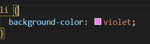

The style attribute specifies an inline style for an element. There are many CSS properties that can be used with the style attribute.
Color: The CSS color property can change the font color of a text.
Text-align: The CSS text-align property can be used for horizontal alignment of the inner content of a block element.
Text-transform: The CSS text-transform property controls the capitalization of text.
Line-height: The CSS line-height property specifies the height of a given line. The line height can be set in centimeters, pixels, points, length(in em), and percentages. For percentages, 100% is equivalent to the original line height.
Letter-spacing: The CSS letter-spacing property increases or decreases the space between characters in a text.
Font-style: The CSS font-style property is used to set the style of the font to italic or oblique. This font is oblique.
Font-size: The CSS font-size property is used to set the font size of a text.
Font-weight: The CSS font-weight property is used to indicate how bold the text characters should be. The font-weight property can be assigned a multiple of 100, from 100 to 900 (900 being the boldest). This property can also be assigned normal, bold, lighter, and bolder.
The CSS background-color property sets the background color of an element
The CSS height and width property are used to set the height and width of an element.

The CSS margin properties are used to create space around elements, outside of any defined borders.
With CSS, you have full control over the margins. There are properties for setting the margin for each side of an element (top, right, bottom, and left).
The CSS border-style property specifies what kind of border to display
The following Values are allowed
The border-style property can have from one to four values (for the top border, right border, bottom border, and the left border).
A dotted border.
A dashed border.
A solid border.
A double border.
A groove border.
A ridge border.
An inset border.
An outset border.
No border.
A hidden border.
A mixed border.
A type selector matches elements with the corresponding node name such as "p", "span" and "div" tags. Generally, type selectors can be used to make broad changes to the style of a site.
Commonly, type selectors are set as defaults:
The type selectors in this example above are setting the display properties of certain tags to block. In this case, when these tags are used, they will have the default display of block
Below is an example of the result of a type selector in action.
Here's a p with text.
The CSS class selector matches elements based on the contents of their class attribute. Via the class selector, CSS can select and access specific elements to style.
Below is an example of the result of class selectors in action.
This paragraph has green text.
This paragraph has green text and a yellow background.
This paragraph has green text and "fancy" styling.
This is just a regular paragraph.
The CSS ID selector is very similar to the class selector but it matches an element based on the value of the element's id attribute rather than its class attribute. Similar to the class selector, in order for an element to be selected, its id attribute must exactly match the value named in the selector.
Below is an example of the result of an ID selector in action. One difference to note is that a # is used to specify an ID vs. the use of a period when selecting a class.
A CSS selector can contain more than one selector and between simple selectors, we can use a combinator
The descendant combinator, represented by a single space ( ) character, combines two selectors such that elements matched by the second selector are selected if they have an ancestor element matching the first selector. Selectors that utilize a descendant combinator are called descendant selectors.
Below, is a small list of examples:
In this case above, “ ul li” signifies any list item that is a descendant of an unordered list.
A child combinator “>” is placed between two CSS selectors. A child combinator requires the elements of the second selector to be the next nested level down of the elements matched by the first selector.
Below, is the CSS, the HTML, and the result of the child combinator in action.